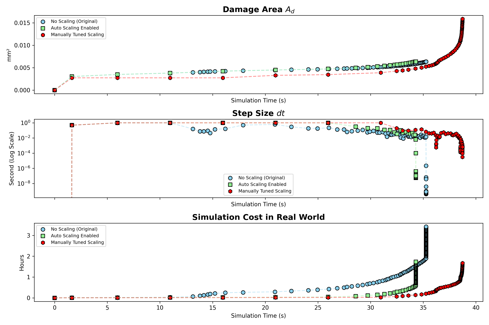

📘 Scaling Impact on Multi-Physics Simulations
🚀 Diversity of Residual
In multi-physics systems, multiple governing equations with their corresponding primary variables are solved simultaneously. Due to differences in scale and physical nature, the residual magnitudes of these variables often vary significantly.
In this example, a hydraulic fracture test is performed.
The simulation couples three physical processes: phase-field fracture, mechanical equilibrium (momentum balance), and pore pressure diffusion (fluid conservation in porous media).
In 2D, there are four primary variables: phase-field damage \( d \), displacements \( u_x \) and \( u_y \), and pore pressure \( p_w \).
Three cases are compared:
-No scaling
-Auto-scaling
-Manual scaling with \( d = 5 \times 10^{-3} \), \( u_x, u_y = 1 \times 10^{-4} \), and \( p_w = 1 \times 10^{-5} \).
🧪 Convergence Demonstration
Manually Tuned Scaling: Successfully captures the crack propagation process driven by increasing pore pressure.

No Scaling: Simulation stuck just before the side crack touches the pre-existing fracture.
_intact.gif)
Time Step and Computational Cost Comparison

✅ The auto-scaling option in MOOSE was also tested. While the GIF is not shown here, the performance was similarly poor as in the no-scaling case.
✅ In both the no-scaling and auto-scaling scenarios, the time step size drops to around \(10^{-7}\) to \(10^{-8}\), making the computation painfully slow. While it technically "converges," it's so time-consuming that the simulation becomes useless in practice.
✅ In contrast, the manually tuned scaling case successfully continues past 35 seconds, with visible crack propagation, demonstrating acceptable convergence.
❓ How to Determine Variable Scaling
✅ 1. Set show_var_residual_norms = true in the [Debug] block of your input file.
✅ 2. Limit steps for testing by setting num_steps = 3.
✅ 3. Run the simulation and examine the residuals of each variable printed in the terminal.
✅ 4. Adjust scaling values accordingly.
✅ 5. Repeat the above steps until convergence behavior improves.
🔎 Note: Avoid setting the scale of the phase-field variable \( d \) too low, as it may prevent damage from evolving. Start with a scale of 1 and reduce only if convergence issues arise.
If issues persist, double-check your material properties and boundary conditions.
❓ Negative Pore Pressure?
✅ This simulation assumes fully saturated conditions.
✅ The occurrence of negative pore pressure during crack propagation is a known numerical artifact rather than a physically realistic phenomenon.
✅ This issue has been documented in prior research, such as in this study.
✅ One rigorous solution is to use a mixed hybrid finite element (MFE) formulation, which solves for both the primary variables (e.g., pressure) and secondary variables (e.g., flux) simultaneously.
✅ Alternatively, a simpler approach is to enforce a lower bound on pore pressure (e.g., \(p_w \geq 0\)), explicitly disallowing negative values.
🔎 Note: Both approaches—using MFE or applying lower-bound constraints—can negatively impact convergence. Careful tuning of solver parameters is often required. And of course, if pore pressure isn’t the main concern—for example, if you're mainly interested in displacement and damage—it’s usually fine to ignore this condition.